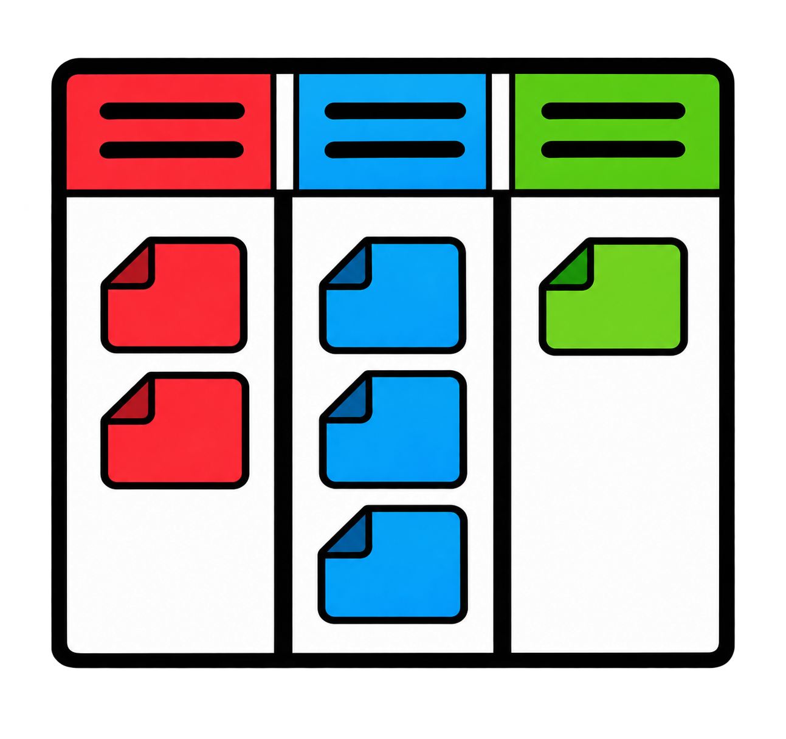

Conocé en profundidad los roles, eventos y artefactos de Scrum, y descubrí cómo se organiza un Sprint a través de un cronograma interactivo.
.png)
Cada rol tiene responsabilidades específicas para lograr un equipo ágil y un producto de valor.

Es responsable de maximizar el valor del producto. Gestiona la Lista de Producto (Product Backlog): la ordena, la mantiene clara y visible para todos, y define las prioridades según las necesidades del negocio y de los usuarios. Es una sola persona y representa a los interesados del proyecto.

Es responsable de que Scrum se entienda y se aplique bien. Actúa como líder al servicio del equipo: facilita los eventos, elimina los obstáculos que frenan el avance y ayuda a todos a mejorar su forma de trabajar, sin dar órdenes ni asignar tareas.

Son las personas que crean el incremento utilizable en cada Sprint. Es un equipo pequeño, multidisciplinario y autogestionado: decide cómo convertir los ítems del Sprint en trabajo terminado, se compromete con el Objetivo del Sprint y comparte la responsabilidad por la calidad del producto.
Hacé clic en cada evento para conocer su duración y objetivo.
Lista priorizada de requisitos del producto.

Lista priorizada de requisitos del producto.
Es la lista ordenada de todo lo que hace falta para mejorar el producto: funcionalidades, mejoras, correcciones y requisitos. Es la única fuente de trabajo del equipo. El Product Owner la gestiona y la mantiene visible, y se va refinando a medida que se aprende más sobre el producto y sus usuarios. Se asocia al Objetivo del Producto, que es su compromiso.
Tareas seleccionadas del Product Backlog para el Sprint.
Tareas seleccionadas del Product Backlog para el Sprint.
Está formada por el Objetivo del Sprint, los ítems de la Lista de Producto elegidos para ese Sprint y el plan para entregarlos. Es un plan hecho por y para el equipo de desarrollo, que lo actualiza todos los días a medida que aprende. Hace visible el trabajo y permite ver cuánto se avanzó durante el Sprint.
Producto potencialmente entregable al final del Sprint.
Producto potencialmente entregable al final del Sprint.
Es un paso concreto hacia el Objetivo del Producto: la suma de todos los ítems terminados en el Sprint y en los Sprints anteriores. Para formar parte del incremento, el trabajo debe cumplir la Definición de Hecho (DoD). Tiene que estar en condiciones de usarse, aunque el Product Owner decida entregarlo o no.
Explorá Kanban como una herramienta de gestión de procesos, mové las tareas entre columnas y descubrí cómo funciona el límite de trabajo en progreso (WIP).

Mové las tareas entre columnas y respetá el límite de trabajo en progreso (WIP) de “En Proceso”.
 Límite WIP alcanzado
Solo se pueden tener 2 tareas en “En Proceso”.
Límite WIP alcanzado
Solo se pueden tener 2 tareas en “En Proceso”.